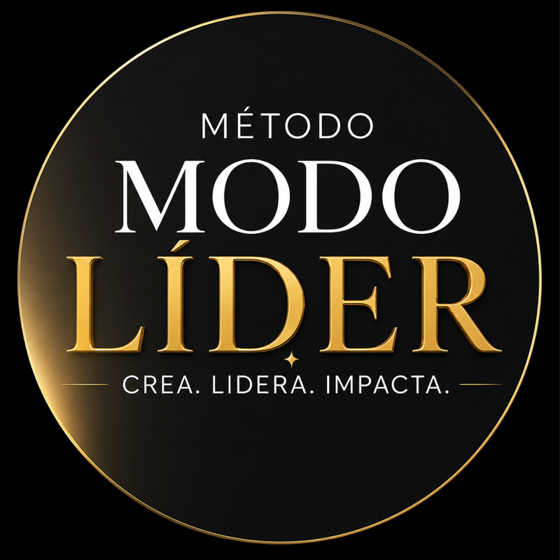

CURSO EMPRENDER DE CERO A IMPACTO Y VENTAS
MÉTODO MODO LÍDER ® · CREA. LIDERA. IMPACTA.
WORKBOOK
VS. MENTALIDAD DE ABUNDANCIA
· PROCESO MENTE PRÓSPERA ·

Clase 7 · Mentalidad, Poder Personal y Creación
Qué es la mente carente, qué es la abundancia, la Ley del Contenedor, cómo identificar la carencia en 4 niveles y cómo entrenar los 7 movimientos del Proceso Mente Próspera.
“Albergamos la capacidad de cambiar lo que no nos gusta, elegir diferente y construir una nueva historia con lo que sí tengo.”
📜 DERECHOS DE AUTOR
- Todos los derechos reservados.
NEUROPSICOEDUCADORA - MENTORA - ESCRITORA
Este material ha sido creado por Lic. Romina Lorena Montiel, Neuropsicoeducadora, Mentora de Mentes y Negocios.
Ninguna parte de este producto, ya sea en formato digital o impreso, puede ser reproducida, distribuida, compartida, almacenada en sistemas de recuperación ni transmitida en ninguna forma ni por ningún medio —electrónico, mecánico, fotocopia, grabación u otro— sin el permiso previo y por escrito de la autora.
Este producto está protegido por la Ley 11.723 de Propiedad Intelectual de la República Argentina y por los tratados internacionales sobre derechos de autor.
La compra de este producto es exclusivamente para uso personal. Su distribución no autorizada constituye una violación a las leyes de propiedad intelectual.
1. ¿Qué es la Mente Carente y qué es la Abundancia?
Como seres humanos nos distingue nuestra inteligencia, nuestra capacidad creativa y nuestra capacidad de aprender cada día para elegir diferente y construir una nueva historia con lo que sí tengo.
❌ ¿Qué es la Mente Carente?
En la mente carente renunciamos a nuestro poder creador, nos rendimos ante nuestros automatismos y dejamos que habiten el ego, el desorden, la complejidad, el trabajo duro desde la inflexibilidad, el agotamiento y el enojo sin sentido.
Su energía es de: culpa, victimismo, falta de perdón, autoabandono, perfeccionismo, síndrome del impostor, miedo, estrés, comparación, procrastinación y «no puedo más».
✨ ¿Qué es la Abundancia?
En la abundancia habitamos la gratitud, el perdón, la empatía, la valentía, el amor propio, los límites puestos a tiempo, la palabra desde la verdad, la calma y el crear un día a la vez sin prisa pero sin pausa.
La energía del dinero y la organización: la abundancia es construir cada día tus prioridades mientras resolvés tus urgencias (mente clara y organización). El dinero es una energía de creación y consecuencia de entregar tu valor al mundo (propósito), abrirte al merecimiento y moverte hacia adelante.
| Lo que deseo recibir | El contenedor psicológico y empresarial que necesito construir |
|---|---|
| Más dinero | Educación financiera y administración. |
| Más clientes | Capacidad comercial y organización. |
| Más oportunidades | Claridad para reconocerlas y decidir. |
| Más responsabilidades | Capacidad de gestión y liderazgo. |
| Más reconocimiento | Seguridad y capacidad de sostener la exposición. |
| Más libertad | Límites, planificación y autonomía. |
| Mentalidad de Carencia | Mentalidad de Abundancia |
|---|---|
| Me concentro en lo que me falta. | Identifico con qué recursos cuento. |
| Veo los problemas como amenazas. | Busco alternativas y posibilidades. |
| Me comparo y siento que no alcanzo. | Reconozco mi valor y desarrollo mis capacidades. |
| Tengo miedo de equivocarme y no lo supero. | Entiendo el error como información para aprender. |
| Espero que alguien me dé una oportunidad. | Aprendo a crear oportunidades. |
| Creo que el éxito de otros me perjudica. | Puedo aprender de otros y desarrollar mi propio camino. |
| Evito tomar algunas decisiones por miedo. | Evalúo riesgos y tomo decisiones conscientes. |
2. ¿Cómo sé que estoy dentro de la mentalidad de carencia? Los 4 niveles
Crear un emprendimiento que funciona tiene un factor condicionante: mi capacidad de «darme cuenta» de que estoy actuando desde mi mente carente y transformarlo. Marcá con sinceridad cuáles de estas señales de los 4 niveles reconocés hoy en vos:
Miedo, inseguridad, frustración, envidia, ansiedad, sensación de amenaza, comparación, baja autoestima o impotencia.
- «No tengo clientes porque los demás ya coparon el mercado y hay demasiada competencia.»
- «No tengo dinero para invertir como otros.»
- «Pienso: “No sé vender y contra eso no se puede”.»
- «Soy esa que siempre hace mal las cosas cuando intento abarcar más de lo que puede masticar.»
- «Ya lo intenté antes y no creo que pueda, no me sale.»
- «Hago todo chiquito, pienso en sobrevivir y no invierto. Prefiero quedarme en esto nomás, que es lo que me sale.»
- «Además, no tengo tiempo. Entre mi marido y mis hijos…»
- «Pienso en todo lo que puedo perder y lo dejo.»
- Postergar, evitar exponerme, no ofrecer o abandonar antes de empezar.
- Cobrar menos de lo que corresponde o hacer cosas gratis sin sentido.
- Compararme y hacerme chiquita (síndrome del impostor o miedo al éxito).
- Querer controlarlo todo y enojarme porque los demás no hacen lo que deben.
- No comprar cuando tengo que reponer mercadería/insumos y perder ventas por miedo.
- Desorganizarme, enojarme, distraerme por días con otras cosas y después decir que las oportunidades me rehúyen.
- No prepararme para mejorar y luego decir que todos avanzan menos yo.
- No elijo reaccionar a tiempo, no priorizo y corro todo el día detrás de las urgencias.
- Rechazo oportunidades sin siquiera evaluarlas.
- Sostengo situaciones que ya no funcionan aunque sé que estoy perdiendo dinero o mi tiempo.
- No invierto en formaciones o en ayuda a pesar de que estoy mal y perdida hace ya tiempo.
- Elijo desde el «prefiero malo conocido».
Movimiento 1 · OBSERVAR: reconocer mi mente carente
No podemos transformar un patrón que no reconocemos. Recordá diferenciar un hecho comercial puntual («Hoy no tengo clientes») de una interpretación sobre tu identidad («No soy suficientemente buena»).
Movimiento 2 · REGULAR: salir del estado de amenaza
Cuando percibimos una amenaza, nuestro organismo entra en estado de alerta y es más difícil sostener la atención, evaluar alternativas y decidir. Por eso no empezamos intentando pensar positivamente: primero trabajamos con el cuerpo.
Movimiento 3 · COMPRENDER: descubrir de dónde viene mi carencia
No todo pensamiento carente tiene el mismo origen. Una creencia puede haber tenido una función protectora en otro momento de nuestra vida, pero no tiene que dirigir nuestras decisiones actuales.
| Los 6 tipos de carencia | Cómo se manifiesta |
|---|---|
| Carencia aprendida | Crecí escuchando que el dinero nunca alcanza. |
| Carencia emocional | Siento que no soy suficiente. |
| Carencia vincular | Creo que tengo que resolver todo sola. |
| Carencia de reconocimiento | Necesito demostrar permanentemente mi valor. |
| Carencia de confianza | No creo que pueda generar nuevas oportunidades. |
| Carencia de merecimiento | Siento culpa cuando recibo o cobro. |
Movimiento 4 · REENCUADRAR: construir una nueva interpretación
Dejamos de tratar nuestros pensamientos como verdades absolutas haciéndonos tres preguntas: 1) ¿Qué estoy pensando? · 2) ¿Qué evidencia tengo de que es absolutamente cierto? · 3) ¿Qué otra interpretación posible hay?
| Pensamiento carente | Nuevo reencuadre funcional |
|---|---|
| No hay clientes. | Todavía no estoy llegando a suficientes clientes potenciales. |
| No puedo cobrar más. | Necesito comunicar mejor el valor de mi propuesta. |
| Ya hay muchas personas haciendo lo mismo. | Necesito descubrir qué me diferencia y para quién soy valiosa. |
| No tengo recursos. | ¿Qué recursos tengo hoy y cuáles puedo desarrollar? |
| No estoy preparada. | Puedo prepararme mientras avanzo. |
| Pensamiento que hoy me limita | Interpretación alternativa creíble y funcional |
|---|---|
Movimiento 5 · RECONOCER: entrenar la percepción de suficiencia
Desde una mirada holística integramos cuerpo, emociones, pensamientos, relaciones y entorno para reconocer, agradecer y valorar los recursos que ya existen hoy.
| Dimensión | Ejercicio: Mi inventario de recursos |
|---|---|
| 1. Conocimientos (¿Qué sé hacer?) | |
| 2. Experiencia (¿Qué aprendí a lo largo de mi vida?) | |
| 3. Relaciones (¿Quiénes pueden conectarme con oportunidades?) | |
| 4. Capacidades (¿Qué problemas o situaciones sé resolver?) | |
| 5. Recursos materiales (¿Qué herramientas tengo hoy disponibles?) | |
| 6. Oportunidades (¿Qué posibilidades todavía no exploré?) |
Movimiento 6 · CREAR: pasar de la escasez a las posibilidades
La mente carente se concentra en lo que no tiene; la mente creadora se pregunta qué puede hacer con lo que tiene, desarrollando tres capacidades: A. Pensamiento de posibilidades, B. Creatividad aplicada y C. Mentalidad de aprendizaje.
Movimiento 7 · ACTUAR: construir evidencia de mi nueva identidad
Las creencias no cambian solamente por pensar diferente: la nueva mentalidad necesita experiencias que la respalden.
Ritual diario: de la carencia a la creación + Evaluación
Principio Modo Líder: Primero te liderás. Después liderás tu negocio.
| # | Afirmación | Puntaje (1 a 5) |
|---|---|---|
| 1 | Reconozco cuándo estoy pensando desde la carencia. | |
| 2 | Puedo regularme antes de tomar decisiones por miedo. | |
| 3 | Puedo diferenciar hechos de interpretaciones. | |
| 4 | Reconozco mis conocimientos, capacidades y recursos. | |
| 5 | Puedo identificar oportunidades que antes no veía. | |
| 6 | Me permito recibir, cobrar y poner límites. | |
| 7 | Tomo acciones concretas aunque sienta incertidumbre. |